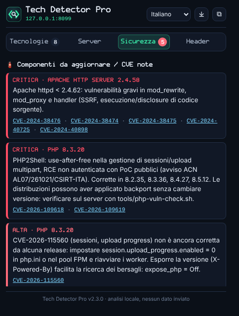
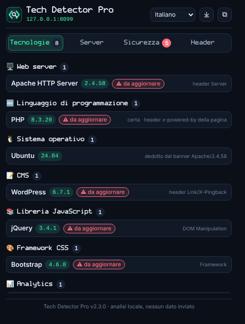

Scopri con cosa è fatto un sito e cosa va aggiornato.
See what a website is built with and what needs updating.
Estensione per Chrome ed Edge che, in un clic, mostra tecnologie, versioni del server (Apache, nginx, PHP, OpenSSL), configurazione di sicurezza e componenti esposti a CVE note. Tutto nel browser: nessun dato inviato a terzi.
A Chrome and Edge extension that shows, in one click, technologies, server versions (Apache, nginx, PHP, OpenSSL), security configuration and components affected by known CVEs. Everything runs in the browser: no data leaves your machine.

Cosa ti dice
What it tells you
Quattro schede, dalle tecnologie visibili a quelle che il server rivela solo negli header HTTP.
Four tabs, from visible technologies to what the server only reveals in HTTP headers.
Tecnologie con versione
Technologies with versions
CMS, framework e librerie JavaScript con la versione reale letta dalla pagina: jQuery, React, Vue, Angular, Next.js, Bootstrap, WordPress e molte altre.
CMS, JavaScript frameworks and libraries with the real version read from the page: jQuery, React, Vue, Angular, Next.js, Bootstrap, WordPress and more.
Server e backend
Server and backend
Apache, nginx, IIS, LiteSpeed, Tomcat, PHP, OpenSSL e ASP.NET con versione, distribuzione Linux stimata, IP, protocollo HTTP/2-3, CDN e cache.
Apache, nginx, IIS, LiteSpeed, Tomcat, PHP, OpenSSL and ASP.NET with versions, estimated Linux distribution, IP, HTTP/2-3, CDN and cache.
Voto di sicurezza A–F
A–F security grade
HSTS, CSP (con il motivo se è debole), clickjacking, Referrer e Permissions Policy, CORS, flag dei cookie, contenuti misti, Subresource Integrity.
HSTS, CSP (with the reason when weak), clickjacking, Referrer and Permissions Policy, CORS, cookie flags, mixed content, Subresource Integrity.
Componenti da aggiornare
Components to update
Versioni fuori supporto o con CVE note, con gravità e link a NIST NVD. Include le regole PHP2Shell dell'avviso ACN/CSIRT Italia.
End-of-life versions or known CVEs, with severity and NIST NVD links. Includes the PHP2Shell rules from the ACN / CSIRT Italia advisory.
Come appare
Screenshots

Parla la tua lingua
Speaks your language
L'interfaccia è tradotta nelle 12 lingue più parlate al mondo. Segue la lingua del browser e si cambia con un clic dal popup; l'arabo si legge da destra a sinistra.
The interface is translated into the 12 most widely spoken languages. It follows the browser language and can be switched from the popup in one click; Arabic is shown right-to-left.
La versione di PHP, anche quando è nascosta
The PHP version, even when hidden
Quasi tutti i siti nascondono la versione di PHP. L'estensione la cerca a livelli e ti dice sempre da dove arriva e quanto è affidabile.
Most sites hide their PHP version. The extension searches in layers and always tells you where the answer comes from and how reliable it is.
| Livello | Layer | Tecnica | Technique | Affidabilità | Confidence |
|---|---|---|---|---|---|
| 1 | X-Powered-By sulle risposte che PHP genera direttamente (cache-buster, /index.php, script inesistente, pagine del CMS) |
X-Powered-By on PHP-generated responses (cache-buster, /index.php, missing script, CMS endpoints) |
certacertain | ||
| 2 | Su richiesta: pagine phpinfo() dimenticate, file di Composer esposti |
On demand: forgotten phpinfo() pages, exposed Composer files |
certacertain | ||
| 3 | Pacchetto della distribuzione: Apache/2.4.52 (Ubuntu) → Ubuntu 22.04 → PHP 8.1 |
Distribution package: Apache/2.4.52 (Ubuntu) → Ubuntu 22.04 → PHP 8.1 |
stimaestimate | ||
| 4 | Requisito del CMS o framework (es. Laravel 11 → PHP ≥ 8.2) | CMS or framework requirement (e.g. Laravel 11 → PHP ≥ 8.2) | minimominimum |
Se il sito usa un altro backend (Next.js su Node.js, .NET, Java, Python, Ruby, siti statici) l'estensione lo dice invece di inventare una versione.
If the site runs another backend (Next.js on Node.js, .NET, Java, Python, Ruby, static sites) the extension says so instead of guessing a version.
Niente falsi positivi
No false positives
Prove, non parole
Evidence, not words
Una tecnologia è riconosciuta da header, cookie, script caricati o oggetti JavaScript, mai perché una parola compare nel testo.
A technology is recognised from headers, cookies, loaded scripts or JavaScript objects, never because a word appears in the text.
Il server non si indovina
No guessing the server
Database, cache e linguaggi non sono visibili dal browser: se compaiono solo nel testo (es. "Redis" in una dashboard) vengono scartati.
Databases, caches and languages are invisible to the browser: text-only mentions (e.g. "Redis" in a dashboard) are discarded.
Stime dichiarate
Labelled estimates
Le versioni stimate sono etichettate come tali e non generano allarmi critici come se fossero certe.
Estimated versions are labelled as such and never raise critical alerts as if they were certain.
Strumenti per CSIRT e sistemisti
Tools for CSIRTs and sysadmins
Il browser vede solo ciò che il server espone. Per rispondere a una segnalazione servono anche verifiche sul server: gli script in tools/ non richiedono nulla oltre a bash e curl.
A browser only sees what the server discloses. To answer an advisory you also need checks on the server: the scripts in tools/ need nothing beyond bash and curl.
php-exposure-scan.sh
Dalla tua postazione: tre richieste per sito, versione PHP esposta e confronto con le soglie di sicurezza.
From your workstation: three requests per site, exposed PHP version compared with security thresholds.
php-vuln-check.sh
Sul server, in sola lettura: tutte le installazioni PHP (FPM, Plesk, cPanel, Docker…), backport delle distribuzioni dai changelog, parametri di php.ini. Output testo o CSV.
On the server, read-only: every PHP install (FPM, Plesk, cPanel, Docker…), distribution backports from changelogs, php.ini settings. Text or CSV output.
./tools/php-exposure-scan.sh -f siti.txt
sudo ./tools/php-vuln-check.sh
sudo ./tools/php-vuln-check.sh --csv > inventario.csvPHP2Shell · CVE-2026-109618, CVE-2026-109619, CVE-2026-115560
Corrette in 8.2.35, 8.3.36, 8.4.27, 8.5.12. CVE-2026-115560 non è ancora corretta da alcuna release: impostare session.upload_progress.enabled = 0 in php.ini o nel pool FPM e riavviare i worker. Fonte: avviso ACN / CSIRT Italia.
Fixed in 8.2.35, 8.3.36, 8.4.27, 8.5.12. CVE-2026-115560 has no fix yet: set session.upload_progress.enabled = 0 in php.ini or the FPM pool and restart workers. Source: ACN / CSIRT Italia advisory.
Installazione
Installation
- Scarica lo ZIP ed estrailo (oppure
git clone https://github.com/umeglio/TechDetectorPro.git). - Apri
chrome://extensionsoedge://extensionse attiva la Modalità sviluppatore. - Clicca Carica estensione non pacchettizzata e scegli la cartella.
- Ricarica le schede già aperte e clicca l'icona sulla barra.
- Download the ZIP and extract it (or
git clone https://github.com/umeglio/TechDetectorPro.git). - Open
chrome://extensionsoredge://extensionsand enable Developer mode. - Click Load unpacked and pick the folder.
- Reload open tabs and click the toolbar icon.
Permessi: lettura della scheda attiva e degli header HTTP, memoria di sessione per scheda. Nessun dato viene inviato a server esterni.
Permissions: active tab and HTTP headers (read-only), per-tab session storage. No data is sent to external servers.